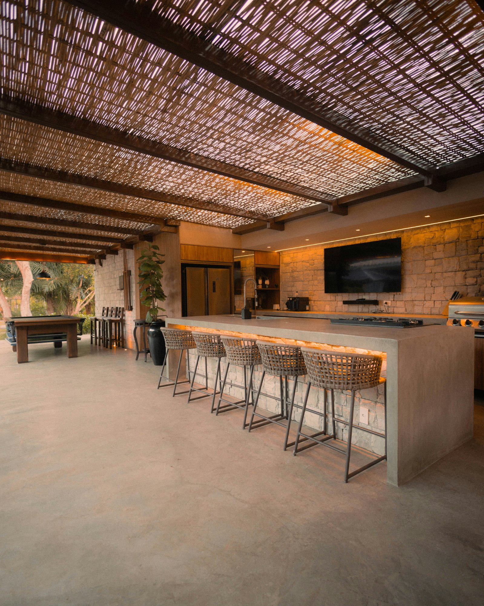
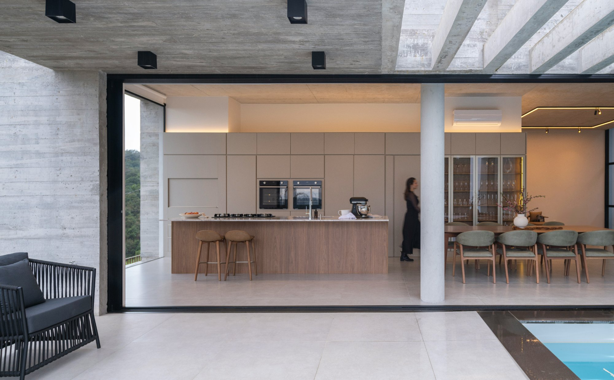

Miami's climate is one of the great gifts of living in South Florida. A thoughtfully designed outdoor kitchen and entertaining space lets you take full advantage of it — making the outdoors a genuine extension of your home rather than just a garden to look at through a window.
This guide covers what makes a truly exceptional outdoor kitchen at the luxury level, what to expect in terms of cost and timeline, and the materials and appliances that perform best in Miami's demanding climate.
A luxury outdoor kitchen at a Miami estate typically costs between $30,000 and $200,000 depending on size, materials, appliances and whether a covered structure is included. A well-specified setup — premium built-in grill, outdoor refrigeration, stone countertops, integrated sound system and a pergola or solid roof structure — typically falls between $60,000 and $120,000.
The single biggest cost variable is the overhead structure. For context on how this fits into your overall estate improvement budget, outdoor living consistently delivers the strongest returns in Miami. An open-air setup is significantly less expensive than a fully covered outdoor room with a solid roof, ceiling fans, integrated lighting and outdoor heaters. For Miami estates where the outdoor kitchen is intended as a year-round entertaining space, the investment in a well-designed covered structure is almost always worthwhile.
In Miami, an outdoor kitchen is not a seasonal upgrade — it is a year-round entertaining space. Design it accordingly, and it will become the most used room in your home.
Miami's combination of humidity, salt air, UV exposure and afternoon rain events is demanding on outdoor materials. Choosing the wrong materials is one of the most common and costly mistakes in outdoor kitchen projects.
For appliances, marine-grade stainless steel (304 or 316 grade) is the minimum standard. Brands like Twin Eagles, Kalamazoo and Wolf build outdoor appliances specifically for coastal environments and carry warranties that reflect their durability. Avoid consumer-grade appliances in an outdoor setting in South Florida — they will corrode quickly.
For countertops, porcelain tile and natural stone (granite, quartzite) are the most practical choices — resistant to heat, UV and moisture. Concrete countertops are popular but require sealing and maintenance. For cabinetry, powder-coated aluminium and concrete block construction outperform wood and standard stainless in humid coastal environments.

Marine-grade materials and premium appliances are essential for South Florida's coastal climate.
At the luxury level, a well-specified outdoor kitchen goes significantly beyond a built-in grill. A serious entertaining setup includes a premium grill as the centrepiece — a Twin Eagles, Kalamazoo or Wolf unit with multiple burners, a rotisserie and an infrared sear zone. Side burners, a dedicated pizza oven or kamado smoker, and a wok burner add versatility for different cooking styles.
Outdoor refrigeration is essential — a dedicated outdoor refrigerator, wine cooler and ice maker mean you never have to go back inside during entertaining. A sink with hot and cold water completes the functional kitchen. Integrated outdoor sound — weatherproof speakers from Sonance or Coastal Source — and an outdoor TV or projector screen round out a complete entertainment setup.
The best outdoor kitchens in Miami are designed around the way the homeowner actually entertains. A kitchen that works for large poolside parties has a different layout than one optimised for intimate dinner gatherings. Think about traffic flow, sightlines to the pool and garden, proximity to the indoor kitchen, and how guests will naturally move through the space.
Work with a designer or landscape architect who has specific experience with luxury outdoor entertaining spaces in South Florida. The best outdoor setups pair naturally with a custom pool or sports court to create a complete estate entertainment zone. The integration of the outdoor kitchen with the pool area, landscape lighting, pergola structure and overall garden design determines whether the finished result feels cohesive and intentional or simply assembled from parts.
How much does a luxury outdoor kitchen cost in Miami?
A luxury outdoor kitchen at a Miami estate typically costs between $30,000 and $200,000. A well-specified setup with a premium grill, outdoor refrigeration, stone countertops and a covered structure typically falls between $60,000 and $120,000.
What materials are best for an outdoor kitchen in Miami's climate?
Marine-grade stainless steel (304 or 316 grade) for appliances, porcelain or natural stone for countertops, and powder-coated aluminium or concrete block for cabinetry are the most durable choices for South Florida's humid, salt-air environment.
Do I need a permit for an outdoor kitchen in Miami?
Yes, in most cases. Outdoor kitchens with gas connections, electrical work or permanent structures require permits in Miami-Dade County. Your contractor should handle permitting as part of the project.
What appliances should a luxury outdoor kitchen include?
At the luxury level, a well-specified outdoor kitchen includes a premium built-in grill (Twin Eagles, Kalamazoo or Wolf), outdoor refrigeration, an ice maker, a sink, side burners, and a pizza oven or smoker. Integrated sound and an outdoor TV complete the entertainment setup.
A private concierge for luxury estate owners.
Estate Circle connects luxury homeowners with the best vetted specialists for high-end estate projects — custom pools, home theaters, smart home systems, wine cellars, outdoor kitchens and more. We find the right people for your specific project, brief them fully before they visit, and stay involved throughout so you never have to chase a contractor.
Planning an outdoor kitchen at your estate?
Contact us and we'll find the best-matched specialists for your project, coordinate site visits, and stay involved from design to completion.
Contact UsNo commitment. We'll follow up within 24 hours.